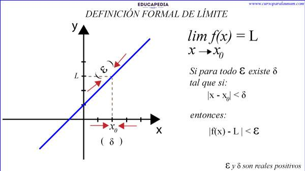
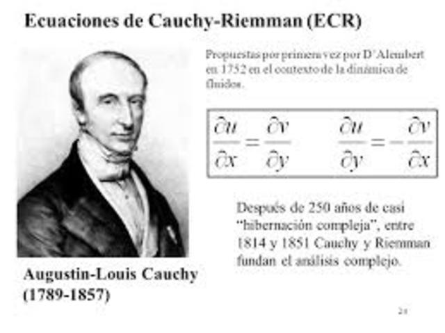

Augustin-Louis Cauchy nació el 21 de agosto de 1789 en París, Francia, poco después del inicio de la Revolución Francesa. Su padre, Louis-François Cauchy, fue funcionario público y apoyó mucho su educación. Desde joven mostró un talento excepcional para las matemáticas.
Estudió en la École Polytechnique y posteriormente en la École des Ponts et Chaussées, donde se formó como ingeniero. Aunque comenzó trabajando en ingeniería civil, pronto se dedicó por completo a la investigación y la enseñanza de las matemáticas.
Cauchy fue matemático, y es considerado uno de los fundadores del análisis matemático moderno. Su mayor aportación fue dar rigor y precisión a conceptos que antes se usaban de manera más intuitiva, especialmente en el cálculo. Definió de manera formal conceptos como límite, continuidad y convergencia, que son fundamentales en el cálculo diferencial e integral.
Entre sus logros más importantes están:
- La formulación rigurosa del concepto de límite.
- El desarrollo de los criterios de convergencia para series (como el criterio de Cauchy).
- Aportes fundamentales al análisis complejo, incluyendo el Teorema Integral de Cauchy.
- Contribuciones al estudio de ecuaciones diferenciales y a la teoría de funciones.
Cauchy fue profesor en la École Polytechnique y miembro de la Academia de Ciencias de Francia. Publicó una enorme cantidad de trabajos científicos (más de 700), lo que lo convierte en uno de los matemáticos más prolíficos de la historia.
Falleció el 23 de mayo de 1857 en Sceaux, Francia. Hoy es reconocido como una figura clave en la historia de las matemáticas, ya que gracias a él el cálculo adquirió la base teórica rigurosa que se utiliza actualmente.